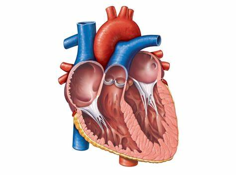
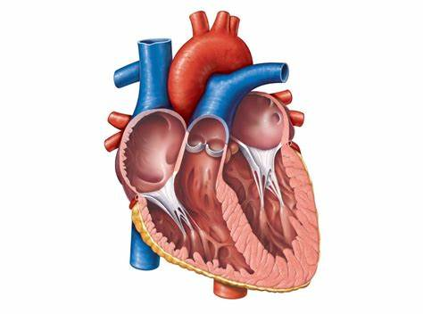
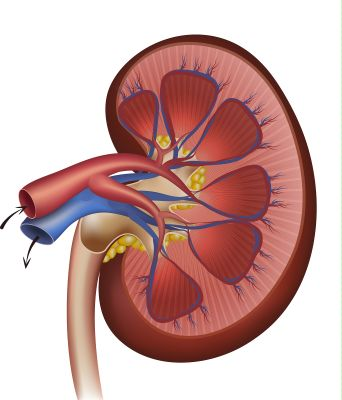
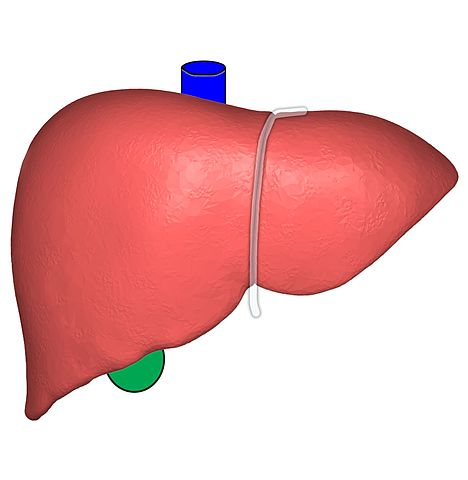

So what is illegal organ transplanting?
Organ harvesting and transplantation is something that happenes in many third world countries. Right now in 2021, the most prevelant location for unethical organ harvesting is
China
China (Chinese: 中国; pinyin: Zhōngguó), officially the People's Republic of China (PRC; Chinese: 中华人民共和国; pinyin: Zhōnghuá Rénmín Gònghéguó), is a country in East Asia. It is the world's most populous country, with a population of more than 1.4 billion.
which curently has one of the highest
GDPsThe total value of goods produced and services provided in a country during one year
in the world. According to this article published by the
UN Abreviation for United nations. An international organization of countries set up in 1945, in succession to the League of Nations, to promote international peace, security, and cooperation.
, China's organ harvesting seems to be targeted towards "specific ethnic, linguistic or religious minorities held in detention, often without being explained the reasons for arrest or given arrest warrants, at different locations". According to the allegations, the most common organs that are harvested include
hearts
Abreviation for United nations. An international organization of countries set up in 1945, in succession to the League of Nations, to promote international peace, security, and cooperation.
, China's organ harvesting seems to be targeted towards "specific ethnic, linguistic or religious minorities held in detention, often without being explained the reasons for arrest or given arrest warrants, at different locations". According to the allegations, the most common organs that are harvested include
hearts
The heart pumps blood around the whole body.,
kidneys
The kidneys remove waste from the blood.,
livers
The liver detoxifies various metabolites, synthesizes proteins and produces biochemicals necessary for digestion and growth,
corneas
The cornea acts as a window for light for the eye.
, etc